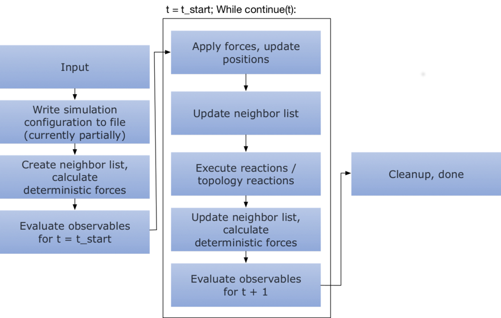

Simulation
The system object can generate one or multiple simulation objects, which determine how to simulate the system.
This includes among other things the diffusion integrator, the reaction handler, observables.
The initial positions of particles are also set on the simulation object.
Given a system one can generate a simulation by invoking
simulation = system.simulation()
The function takes a number of arguments that influence the way the simulation is executed:
simulation = system.simulation(
kernel="SingleCPU",
output_file="",
integrator="EulerBDIntegrator",
reaction_handler="Gillespie",
evaluate_topology_reactions=True,
evaluate_forces=True,
evaluate_observables=True,
skin=0
)
Except for the kernel argument, all of these arguments can also be modified by setting properties on the
simulation object. The configuration of the reaction diffusion system is copied into the simulation object,
so subsequent changes to the reaction diffusion system will not propagate into the simulation.
Selecting a kernel
Currently there are two different kernels that are supported: the SingleCPU and the CPU kernel. As the name
suggests, the SingleCPU kernel is single-threaded whereas the CPU kernel attempts to parallelize as much as
possible, thus making use of more cores.
It can be expected that the SingleCPU implementation is roughly as fast as the CPU implementation with two threads,
as it applies Newton’s third law for calculating pairwise forces and evaluates reactions per particle pair, which are
the two major performance bottlenecks.
Configuration
In the following it will be explained how to add particles, add topologies, configure specifics of the selected kernel, how to record a trajectory, and how to perform checkpointing.
Adding particles
For adding particles to a system there are two separate methods. One is can be to place a single particle, one
is for bulk insertion.
Adding a single particle of type A to a simulation box amounts to
simulation.add_particle(type="A", position=pos)
where pos can be a list [x, y, z], tuple (x, y, z), or a numpy.ndarray: np.array([x, y, z]) with three entries
representing the x,y,z components.
When one wants several particles of a certain type to the simulation, one can can exchange multiple calls to
simulation.add_particle by the better performing variant
X = np.random.random((100, 3))
simulation.add_particles(type="A", positions=X)
taking a (N, 3)-shaped numpy array as position argument, resulting in N particles with their respective positions
being added to the simulation. In this example, 100 particles of type A would be placed uniformly at random
in $[0,1)^3$.
Adding topologies
A topology can be added by invoking
my_topology = simulation.add_topology(topology_type="My topology type", particle_types="T",
positions=np.random.random((100, 3)))
which requires a “My topology type” topology type and a topology species “T”
to be registered in the ReactionDiffusionSystem. In this example the
topology will contain 100 randomly placed topology particles of type “T” that are for now disconnected.
If the topology should contain several different particle types one can pass a list of particle types to the particle_types argument
that contains types for all the positions:
my_topology = simulation.add_topology(
topology_type="My topology type",
particle_types=["T1", "T2", "T3", "T2", "T1"],
positions=np.random.random((5, 3))
)
Unless the topology consists out of only one particle, one still needs to set up the connectivity graph before running
the simulation. The returned object my_topology is a topology object as the ones described in
topology reactions. Edges in the graph can be introduced like
my_graph = my_topology.get_graph()
for i in range(len(graph.get_vertices())-1):
my_graph.add_edge(i, i+1)
where the indices that go into add_edge correspond to the particle positions that were entered in add_topology.
The simulation can only be executed if the graph of each topology is connected,
- i.e., there are no independent components (between each pair of vertices there is at least one path in the graph that connects them),
and for each edge there is a bond,
- i.e., all particle type pairs that are contained in the graph have at least one entry in the topology potential configuration.
Should one of these two conditions be not fulfilled, starting the simulation will raise an error.
Kernel configuration
In case of selecting the CPU kernel with a parallelized implementation of the ReaDDy model, one can change certain aspects of its behavior:
- The number of threads to be used can be selected by
simulation.kernel_configuration.n_threads = 4 -
Mainly due to pairwise interactions and bimolecular reactions there is a neighbor list to reduce the time needed for evaluating these. The neighbor list imposes a spatial discretization on the simulation box into cuboids. In the default case, each of these cuboids has an edge length of at least the maximal cutoff radius / reaction radius. This means that instead of naively looping over all particle pairs ($\mathcal{O}(N^2)$), one can assign each particle to its cuboid and then loop over all particles in a cuboid and its 26 neighboring cuboids to find particle pairs.
When collecting particle pairs in this fashion one effectively approximates a sphere with cuboids. The number of potential interaction or reaction partners can be further reduced by using only a fraction of the edge length but increasing the search radius of the neighboring boxes so that one still covers at least the cutoff radius in each spatial dimension.
Reducing the edge length usually comes with a price, at some point the bookkeeping of neighboring boxes dominates the runtime.
The edge length and therefore search radius can be controlled by
simulation.kernel_configuration.cell_linked_list_radius = 4which would yield cuboids with $\frac{1}{4}$ the edge lengths of the default case.
Recording a trajectory
ReaDDy records trajectories and observable data in HDF5 files. For doing so one needs to set an output file
simulation.output_file = "my_trajectory.h5"
and instruct the simulation to record a trajectory:
simulation.record_trajectory(stride=1, name="", chunk_size=1000)
The stride arguments causes the trajectory to be recorded every stride time steps. If a name (other than
the default one) is given, the trajectory data will be stored in a different data set. The chunk_size is mainly
a performance parameter that has an effect on how large every chunk of data in the binary file is going to be,
influencing the time needed for IO during the simulation and the resulting file size.
For reading back the trajectory data, please refer to post-processing.
NOTE: When running long simulations on a cluster it can happen that the process runs into a timeout causing the already recorded data to be corrupted. This can possibly be mitigated by configuring the job manager to send SIGINT before KILLing the process. That way the file can still be properly closed (see issue #220, thanks @jansteinkuehler). Please make sure this works in your environment before running long simulations.
Checkpointing
Checkpoints in ReaDDy consist out of the particles’ and topologies’ configurations at specific points in simulation time. They can be enabled by calling
simulation.make_checkpoints(stride=1000, output_directory="checkpoints/", max_n_saves=10)
which causes checkpoints to be made every 1000 steps. Each checkpoint is a separate file and all checkpoint files will be
saved to the directory specified by output_directory. The option max_n_saves decides how many checkpoint files
are allowed to be saved to the directory, e.g. if max_n_saves=10 then only the last 10 most recent checkpoints
are kept.
Once the simulation has run its course and checkpoint files have been written, they can be listed by
simulation.list_checkpoint_files('checkpoints/')
A particular checkpoint file can in principle also contain multiple checkpoints. They can be inspected by
simulation.list_checkpoints('checkpoints/checkpoint_10000.h5')
and a system’s state can be restored by a call to
simulation.load_particles_from_checkpoint('checkpoints/checkpoint_10000.h5')
amounting to restoring the latest checkpoint of that particular file. If the file contains multiple checkpoints, let’s say 5, you can
select the 5th checkpoint by supplying the optional argument n=4 (enumeration starts at n=0 per file).
Oftentimes you just need the last checkpoint of all checkpoint files in a certain directory. This can be achieved by
simulation.load_particles_from_latest_checkpoint('checkpoints/')
It should be noted that if the simulation should be continued and the output_directory for the new checkpoints is the
same as of the original simulation, the old checkpoint files will be overwritten. If you want to keep the checkpoints
of the original simulation, specify another output_directory.
Observables
The currently available observables are:
- Radial distribution function
- Particles
- Particle positions
- Number of particles
- Energy
- Forces
- Reactions
- Reaction counts
- Virial
- Pressure
There are three things that all observables have in common: The evaluation can be strided, they can have a callback
function and they can be saved to the simulation.output_file.
The callback is usually a function that takes one argument being the current value of the observable. During the
course of the simulation this callback function will be evaluated whenever the particular observable is evaluated.
Per default, whenever an output_file is given, the registered observables’ outputs are saved to that file. Each
observable has a certain place in the group hierarchy of the HDF5 file, however this place can be modified so that,
e.g., multiple observables of the same type can be recorded into the same file.
To this end, the save argument of the respective observable can be modified. By providing
NoneorFalsewriting the results to file can be switched off,- providing a dictionary with keys
'name'and'chunk_size'can modify the name under which the observable data is stored in the group hierarchy and the hdf5 chunk size. Thechunk_sizeis always to be considered into the “temporal direction”, i.e., if an observable yields data in the form of3x3matrices each time it is evaluated, a chunk would be of shape(3, 3, chunk_size).
Radial distribution function
The radial distribution function for certain particle types can be observed by
def rdf_callback(current_value):
print(current_value)
simulation.observe.rdf(
stride=1,
bin_borders=np.linspace(0., 2., 10),
types_count_from=["A"],
types_count_to=["B"],
particle_to_density=1./system.box_volume,
callback=rdf_callback)
which causes the observable to be evaluated in each time step (stride=1) and print the value (callback=rdf_callback).
The RDF is determined by calculating the distance from all particles of a type contained in types_count_from to
all particles of a type contained in types_count_to and then binning the distance into a histogram as given by bin_borders.
The histogram is normalized with respect to $g(r) = 4\pi r^2\rho dr$, where $\rho$ is the number density of particles
with types contained in types_count_to, reflected by particle_to_density.
Particles
This observable records all particles in the system, as in: Each particle’s type, (unique) id, and position. It can be registered by
def particles_callback(particles):
types, ids, positions = particles
print("Particle 5 has type {}, id {}, and position {}."
.format(types[5], ids[5], positions[5])
simulation.observe.particles(
stride=5,
callback=particles_callback,
save=False
)
where the argument of the callback function is a 3-tuple containing a list of types, unique ids, and positions
corresponding to each particle in the system. In this example the callback function prints these properties of the
fifth particle every fifth time step, the output of the observable is not saved into the trajectory file (save=False).
Particle positions
The particles’ positions can be recorded by
simulation.observe.particle_positions(
stride=200,
types=None,
callback=lambda x: print(x)
)
which makes this observable very similar to the particles one, however one can select specific types of particles
that are recorded. In case of types=None, all particle positions will be recorded, in case of types=["A", "B"]
only positions of particles with type A or B are returned.
In this case the callback will simply print x every 200 steps, where x is a list of three-dimensional vectors.
Since save is not explicitly set to False or None the observed data will be recorded into the trajectory file
if n simulation.output_file was configured.
Number of particles
When one is only interested in the sheer number of particles then one can use this observable. Depending on the input, it will either observe the total number of particles or the number of particles per selected type:
simulation.observe.number_of_particles(
stride=1,
types=["A", "B", "C"],
callback=lambda x: print(x),
save=False
)
This example records the numbers of particles with types A, B, C in each time step. The callback takes
a list with three elements as argument where each element corresponds to a particle type as given in types and
contains the respective counts. If types=None was given, the observable would record the total number of particles,
regardless of their types.
Energy
The system’s current potential energy can be observed by
simulation.observe.energy(
stride=123,
callback=lambda x: print("Potential energy is {}".format(x)),
save=False
)
where stride=123 indicates that the observable will be evaluated every 123rd time step. The argument of the callback
function is a scalar value and the observable’s output is not saved to a potentially configured trajectory file.
Forces
The forces acting on particles can be observed by
simulation.observe.forces(
stride=1,
types=["A"],
callback=lambda x: print(sum(x))
)
yielding an observable that is evaluated every time step (stride=1) and collects the forces acting on all particles
of type A. If types=None, all types are considered. The callback function takes a list of vectors as argument.
Since save is not further specified, this observable would be recorded into the trajectory file.
Reactions
This observable records all occurred reactions in the system for a particular time step. It can be registered by invoking
def reactions_callback(reactions):
for r in reactions:
print("{} reaction {} occurred: {} -> {}, position {}"
.format(r.type, r.reaction_label, r.educts, r.products, r.position))
print("----")
simulation.observe.reactions(
stride=5,
callback=reactions_callback
)
where stride=5 indicates that the observable is evaluated every fifth time step. The callback takes a list of
reaction records as argument, where each reaction record stores information about the
- type of reaction (
r.type), i.e., one of conversion, fission, fusion, enzymatic, decay, - reaction name (
r.reaction_label), i.e., the name under which the reaction was registered in thesystem, - educt unique particle ids (
r.educts) as in the particles observable, - product unique particle ids (
r.products), - and position (
r.position) of the reaction event which is evaluated to the midpoint between educts in case of a bimolecular reaction.
Since the save argument was left out, it is defaulted and given a simulation.output_file, the observed reactions are
recorded.
Reaction counts
Instead of recording all reaction events one can also record the number of occurred reactions per registered reaction per time step. This can be achieved by
simulation.observe.reaction_counts(
stride=2,
callback=lambda x: print(x),
save=False
)
where stride=2 causes the observable to be evaluated every second time step. The callback function takes
a dictionary as argument where the keys are the reaction names as given in the
system configuration and the values
are the occurrences of the corresponding reaction in that time step.
Virial
This observable evaluates the pressure virial according to pair-wise forces by evaluating
where $\mathbf{r}_{ij}$ is the vector difference between the positions of particle i and j, $\mathbf{f}$ the pair-wise force.
It can be registered by
simulation.observe.virial(
stride=5,
callback=lambda x: print(x)
)
which causes it to be evaluated every fifth time step (stride=5). The callback function takes a numpy array of shape (3,3) as argument.
Pressure
The pressure of a system can be understood in terms of the trace of a pressure tensor
which is defined via the virial tensor
where $V$ is the system’s volume, $N_t$ the number of (physical) particles that somehow partake in the dynamics of the system, and $k_BT$ the thermal energy.
Observing the pressure in a simulation amounts to
simulation.observe.pressure(
stride=1,
physical_particles=["A", "B", "C"],
callback=lambda p: print("current pressure: {}".format(p))
)
where stride=1 causes the pressure to be evaluated in every time step, physical_particles are set to be particles of
type A, B, or C (physical_particles=None causes all particles to be considered physical), and the callback
function takes a scalar value as argument.
Internally, the pressure observable builds up on the virial observable
and the number_of_particles observable and when writing it to file
not the actual pressure is recorded but the output of these other two observables.
In the HDF5 group hierarchy the observable’s group is per default postfixed by _pressure, causing the virial
to be stored under virial_pressure and the number of particles under n_particles_pressure.
Changing the postfix amounts to providing a dictionary to the save argument with
pressure_save_options = {
'name': "empty_or_other_postfix",
'chunk_size': 500
}
simulation.observe.pressure(1, ["A", "B", "C"], save=pressure_save_options)
where the chunk_size refers to the HDF5 chunk size of data sets.
Running the simulation
Per default, the simulation loop looks like below

This means that all observables are evaluated at the initial state regardless of their stride, after which
the actual loop is performed.
A simulation is started by invoking
simulation.run(n_steps=1000, timestep=1e-5)
where n_steps is the number of time steps to perform and the timestep is the time step. Per default an overview
of the system configuration is printed upon simulation start, this can be disabled by providing the
argument show_system=False.
One can influence portions of the loop through the simulation object:
- Per default a progress bar is shown when the simulation is executed, however it can be hidden
print(simulation.show_progress) simulation.show_progress = False - If one does not want to evaluate topology reactions at all, one can invoke
simulation.evaluate_topology_reactions = False - Evaluation of forces can be deactivated by invoking
simulation.evaluate_forces=False - Evaluation of observables can be switched off altogether by
simulation.evaluate_observables=FalseNote that setting this to
Falsealso causes the trajectory to not be recorded. - In case of a large simulation box but small interaction radii one can sometimes boost performance by artifically
increasing the cuboid size of the neighbor list’s spatial discretization by setting
simulation.skin = swhere $s\geq 0$ is a scalar that will be added to the maximal cutoff.
Furthermore, one can select the
Integrator
Currently the only available integrator is the EulerBDIntegrator which is selected by default and can be selected by
a call to
simulation.integrator = "EulerBDIntegrator"
It integrates the isotropic brownian dynamics
with an Euler-Maruyama discretization
where
Reaction handler
Reactions in ReaDDy are evaluated per time step, meaning that each particle might have multiple possible reaction partners. In order to solve this, one can chose between two different reaction handlers:
- The
UncontrolledApproximationreaction handler is the less rigorous of the two. It performs as follows:- A list of all possible reaction events is gathered.
- For each element of this list a decision is made whether it is to be evaluated based on the time step and its rate as described in the section about reactions.
- The filtered list is shuffled.
- For each event in the list evaluate it unless its educts have already been consumed by another reaction event.
A problem of this reaction handler is that it does not give preference to reaction events based on their rate in case of a conflict, i.e., two events that share educts. However in the limit of small time steps this problem disappears.
This reaction handler can be selected by invoking
simulation.reaction_handler = "UncontrolledApproximation" -
The
Gillespiereaction handler is the default choice and is statistically exact in the sense that it imposes a Gillespie reaction order on the events of a particular time step:A list of all possible reaction events is gathered. Then
- Each reaction event is assigned its normalized reaction rate $\lambda_i/\sum_i\lambda_i$
- A random event is picked from the list based on its normalized reaction rate, i.e., a uniform random number between 0 and 1 is drawn and then used together with the cumulative normalized reaction rates to determine the event
- Depending on its rate the reaction described by the event might be performed:
- if not the event is simply removed from the list
- if it was performed it is also removed and any other event that shared educts with this particular event
- if there are still events in the list go back to 1., otherwise stop
An example of conflicting reaction events with expected outcome might be
$$ \left\{ \begin{array}{rcc} A + B &\xrightarrow{\lambda_1}& C\\ A &\xrightarrow{\lambda_2}& D \end{array} \right. \xrightarrow{\lambda_1 \gg \lambda_2} \left\{ \begin{array}{rcc} A + B &\xrightarrow{\lambda_1}& C\\ &\mathrm{ignored} \end{array} \right. $$This reaction handler can be selected by invoking
simulation.reaction_handler = "Gillespie"